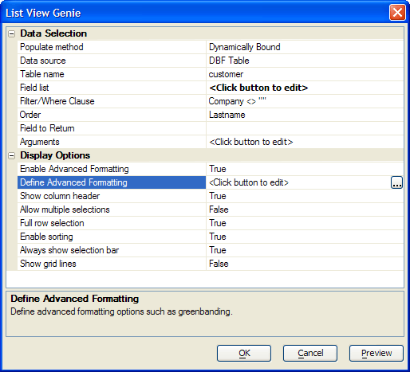
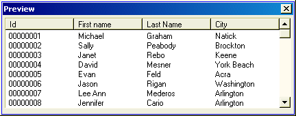
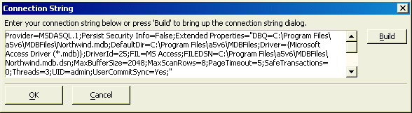

List View Genie
The List View Genie allows you to present a user with either an attractive, well formatted, and easy-to-use static list of choices or a dynamic list of choices and return the user's selection. You can:
allow single or multiple selections
hide or display column headers, grid lines, and scroll bars
With dynamic lists you can:
present any field retrieved from an Alpha Anywhere, ADO compatible, or ODBC compatible database
filter the records you retrieve with an Xbasic or SQL SELECT statement
order the records you retrieve with an Xbasic or SQL SELECT statement
pre-populate the lists before the control displays
retrieve data for the lists as it is needed
While very similar, there are important differences between a Pre-populated List and a Dynamically Bound List.
|
Feature |
Pre-populated List |
Dynamically Bound List |
|
Number of records retrieved |
All that you select are retrieved before the control displays. |
Only retrieves as many records as are necessary to fill the lines of the control. |
|
Significance of displayed data |
The data is a "snapshot" of the database at a point in time. |
The data is live. If another user changes the data, the revision will appear in the list view control. |
To create a list view style Xdialog.
Create a new Action Script.
Select "Xdialog Windows" in the Category list.
Select "Display an XDialog Box" in the Action list.
Click OK to display the Script Genie.
Enter the name of new variable in the Variable Name field.
Optionally, change the value of the Prompt field.
Optionally, change the selection in the data Type list.
Select "List View style Dialog" in the Style list.
Set the Width and Height of the resulting dialog box.
Click Define List View Control to display the List View Builder.
Continue with Data_Selection.

Click OK to exit from the List View Genie.
Optionally click the Preview button to see what the new dialog box will look like.
Click Next >.
Optionally, enter the title of the dialog box in the Dialog Title field.
Optionally, enter text to appear at the top of the dialog box into the Header Text field.
Optionally, enter text to appear at the bottom of the dialog box into the Footer Text field.
Optionally, modify the bottom labels in the Button Text fields.
Click Next >.
Optionally, modify the name of the variable in the Variable Name field that will capture the return value of the Xdialog box.
Optionally, change the Scope of the return variable to one the following values. A variable's scope refers to where the variable can be seen, i.e. which other scripts can access the variable.
"Shared". Variables are available throughout the current form.
"Global". Variables are available anywhere in Alpha Anywhere.
"Local". Variables are available only in the current script.
Click Next >.
Optionally, modify the comment that describes the action.
Click Finish.
In the Data Selection > Populate method field select you are going to provide the data that the control will display. The options are:
"Pre-populate from Static List"
"Pre-populate from Data Source"
"Dynamically Bound"
If you selected "Pre-populate from Static List" in step 1, continue with Pre-populate from Static List.
If you selected "Pre-populate from Data Source" or "Dynamically Bound" in step 1, continue with Pre-Populate from Data Source.
Click
 in the Data Selection > Choices
field to display the Static List dialog.
in the Data Selection > Choices
field to display the Static List dialog.Optionally, change the character (default "|") used as a field delimiter in the Column delimiter field.
Optionally, change the characters used as a record delimiter in the Row delimiter field. The valid entries are:
and any other printable character(s) such as |,#@^. Enter the column headers, with fields separated by your selected delimiters.
Enter data, one row per record, with fields and records separated by your selected delimiters. The {DATA=<return_value>}<display_value> syntax allows you to return the specified <return_value> when the user clicks on a row that displays <display_value>.
Click OK to continue.
The following lines show some sample data:
|
Id|First name|Last Name|City {DATA=00000001}00000001|Michael|Graham|Natick {DATA=00000002}00000002|Sally|Peabody|Brockton {DATA=00000003}00000003|Janet|Rebo|Keene {DATA=00000004}00000004|David|Mesner|York Beach |

Make a selection from the Data Selection > Data source field. The options are:
"DBF Table"
"Access Database"
"ADO Data Source"
If you selected "DBF Table"in step 1, continue with DBF Table.
If you selected "Access Database"in step 1, continue with Access Database.
If you selected "ADO Data Source"in step 1, continue with ADO Data Source.
Select a table in the Data Selection > Table name list.
Optionally, click in the Data Selection > Arguments field to define the arguments that you will use in a filter expression.
Click
in the Data Selection > Field list
field to select the fields to display the Select Fields dialog box.Optionally, enter a filter expression that selects records into the Data Selection > Filter/Where Clause field. For assistance, click
 to display the Expression Builder and press F10
to see a list of arguments.
to display the Expression Builder and press F10
to see a list of arguments.Optionally, enter an expression that orders records in the Data Selection > Order field. For assistance, click
to display
the Order Builder.Select the field to return from the Data Selection > Field to Return list.
Optionally, click
in the Data Selection > Arguments
field to display the Define Arguments dialog. This dialog defines parameters to use in
the query's filter or where clause. Arguments allow you to customize at
runtime the data displayed in the list.Continue with Display Options.
Click
 in the Data Selection > Choices
field to select the Access database.
in the Data Selection > Choices
field to select the Access database.Optionally, click in the Data Selection > Arguments field to define the arguments that you will use in a filter expression.
Make a selection in the Data Selection > Populate from list. The options are:
"Table"
"SQL"
If you selected "Table" in step 3:
Select a table from the Data Selection > Table name list.
Click
in the Data Selection > Field list
field to select the fields to display the Select Fields dialog box.Optionally, enter a filter expression that selects records into the Data Selection > Filter/Where Clause field. For assistance, click
to display the Specify Filter dialog box.Optionally, click in the Data Selection > Order field to enter an expression that orders records. For assistance, click
to display the Specify Order dialog.If you selected "SQL" in step 2, click
in the Data Selection
> SQL Select Statement field to define the SQL Select statement
in the Define SQL Statement dialog box.Select the field to return from the Data Selection > Field to Return list.
Optionally, click
in the Data Selection > Arguments
field to display the Define Arguments dialog. This dialog defines parameters to use in
the query's filter or where clause. Arguments allow you to customize at
runtime the data displayed in the list.Continue with Display Options.
Click
in the Data Selection > Connection
String field to display the Connection String dialog.Optionally, click in the Data Selection > Arguments field to define the arguments that you will use in a filter expression.
Make a selection in the Data Selection > Populate from list. The options are:
"Table"
"SQL"
If you selected "Table" in step 3:
Select a table from the Data Selection > Table name list.
Click
in the Data Selection > Field list
field to select the fields to display the Define SQL Statement dialog box.Optionally, enter a filter expression that selects records into the Data Selection > Filter/Where Clause field. For assistance, click
to display the Specify Filter dialog box.Optionally, click in the Data Selection > Order field to enter an expression that orders records. For assistance, click
to display the Specify Order dialog box.If you selected "SQL" in step 2, click
in the Data Selection
> SQL Select Statement field to define the SQL Select statement
in the Define SQL Statement dialog box.Select the field to return from the Data Selection > Field to Return list.
Optionally, click
in the Data Selection > Arguments
field to display the Define Arguments dialog. This dialog defines parameters to use in
the query's filter or where clause. Arguments allow you to customize at
runtime the data displayed in the list.Continue with Display Options.
To enable advanced formatting, check Display Options > Enable Advanced Formatting.
Click
in the Display Options > Define Advanced
Formatting field to display the Advanced Formatting dialog box and display colors,
tab stop positioning, fonts, and numbering.To suppress column titles, check Display Options > Do not show column header.
To allow multiple selections, clear Display Options > Do not allow multiple selections.
When enabled, the Display Options > Full row selection option allows the user to select the entire row. When disabled, the user can only select data in the first column.
The Display Options > Enable sorting option enables and disables the ability to sort the data in the list view by clicking on a column title.
When enabled, the Display Options > Always show selection bar option highlights the current row, even when the control does not have focus.
The Display Options > Show grid lines option displays and hides grid lines.
The Preview button provides a quick preview of the list view with several rows of data.
Enter the connection string for your database.
Optionally, click Build to display the Windows Data Link Properties dialog.
Click OK to continue.

See Also
Simple Static List View, SQL Builder, Display Xdialog Form based on ADO/ODBC Data, Define Arguments Dialog, Specify Filter Dialog, Specify Order Dialog, Define SQL Statement Dialog, Select Fields Dialog